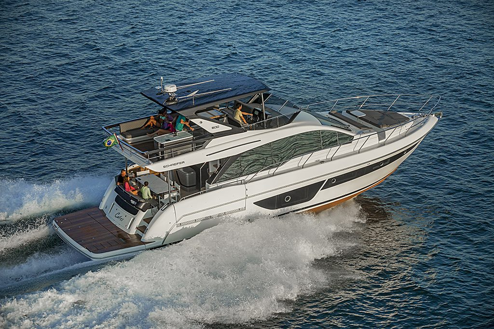
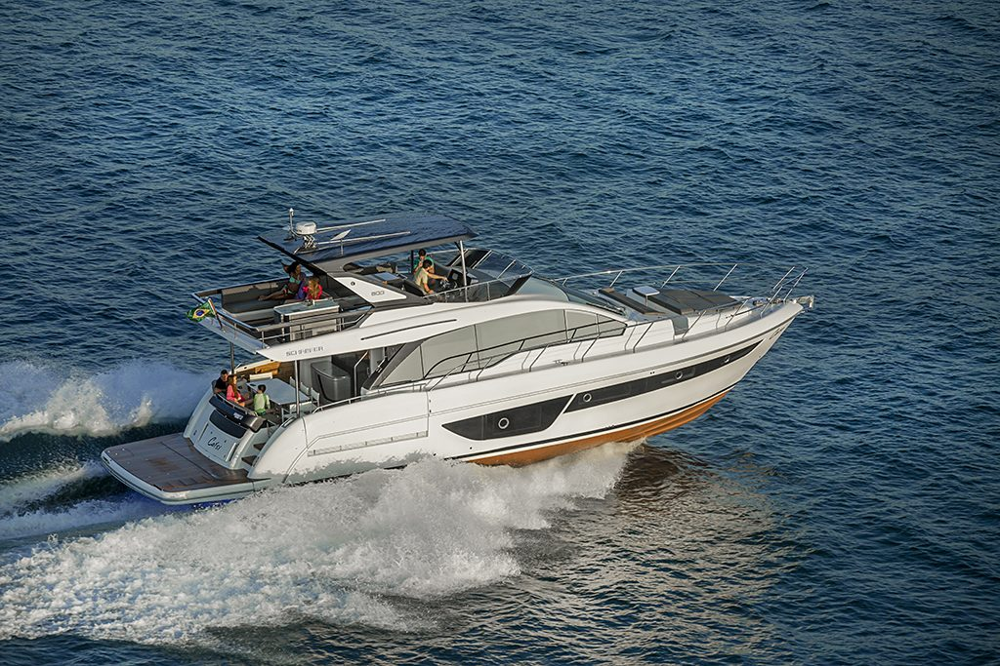

Visão geral
Balcões retráteis e plataforma submersível.
18,08 m
Comprimento máximo
4,96 m
Boca máxima
Lançada no Rio Boat Show 2025, a 600 abre dois balcões laterais retráteis que levam a boca de 4,96 m para 6,30 m na praça de popa. É espaço de convivência que aparece só quando o barco para.
A plataforma submerge 30 cm abaixo da linha d’água, suporta 800 kg e tem escada integrada. O casco é laminado inteiramente por infusão a vácuo.
Diferenciais
O que distingue
este modelo.
Dois balcões laterais retráteis
Ampliam a praça de popa, levando a boca a 6,30 m.
Plataforma submersível
30 cm abaixo da linha d’água, com capacidade para 800 kg.
Escada integrada
Incorporada à própria plataforma.
Laminação 100% por infusão
Todo o casco produzido por infusão a vácuo.

Galeria
Schaefer 600
Interior
pendente
pendente
Praça de popa
pendente
pendente
Cabine
pendente
pendente
Especificações
Números oficiais do estaleiro.
Conheça a 600 de perto.
Agende uma visita ou um sea trial com a equipe da NP Yachts.